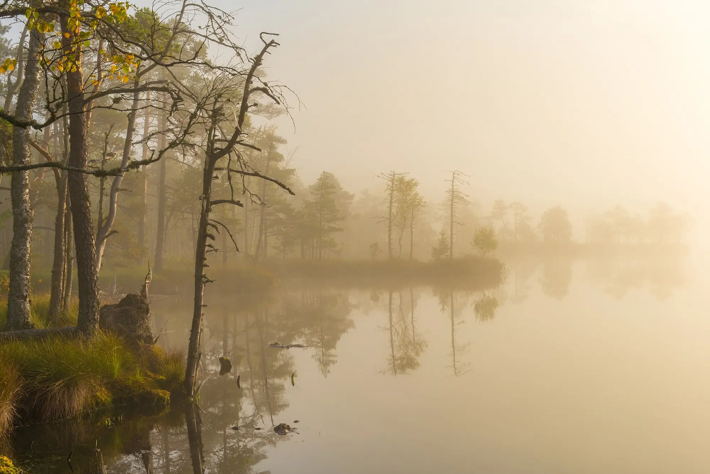

Free evidence tools
What causes cancer and other chronic diseases, and how sure the evidence is
Hommikune udu Kakerdaja rabas, morning mist in Kakerdaja bogPhotograph: Abrget47j, CC BY-SA 3.0
Free tools built from the IARC Monographs and published reviews by Wenxin Wan, a cancer epidemiologist.
They describe whole populations, not what caused any one person’s illness.
Reading the evidence
Same certainty, very different size
Tobacco smoking and processed meat are both in Group 1: the evidence that each can cause cancer is equally sure. The risks are not.
- 100–120in 1,000
- smokers get lung cancer by age 75: about 10 to 12 in 100.
- 4–5in 1,000
- lifelong non-smokers do.
- 18%
- Each 50 grams of processed meat eaten every day raises the risk of bowel cancer by 18%.
European data. Quoted from the Cancer Evidence Explorer.
Seven ideas for reading a health headline →The two explorers
Free, and each in 10 languages.

From the IARC Monographs
Cancer Evidence Explorer
Which exposures can cause which cancers, and how sure the evidence is for each link.
- Exposures
- 185
- Cancer types
- 68
- Links
- 469
In 10 languages

Graded by strength of evidence
Chronic Disease Evidence Explorer
Risk factors for heart disease, stroke, type 2 diabetes, dementia and more, graded by how strong the evidence is.
- Risk factors
- 124
- Diseases
- 45
- Graded links
- 356
In 10 languages

What you can do
Code Against Cancer
The official recommendations for lowering your own cancer risk, coordinated by IARC (WHO) and its partners.
- actions for Europe
- 14
- for Latin America and the Caribbean
- 17
For schools and families
Learning by playing — three games.